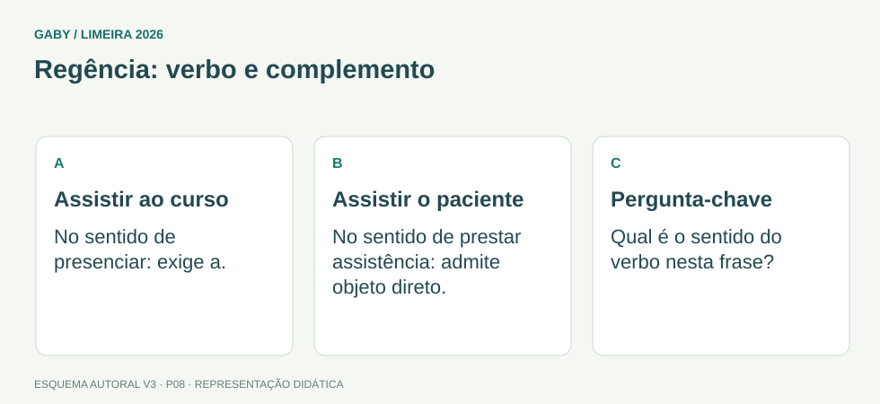

Objetivos do módulo
- Reconhecer a preposição exigida por verbos frequentes.
- Distinguir sentidos de verbos conforme a regência.
- Aplicar regência nominal em construções usuais.
- Classificar verbos em transitivos diretos, transitivos indiretos, transitivos diretos e indiretos e intransitivos, e confirmar a classificação com pronomes.
- Montar corretamente os verbos de dois complementos (informar, pagar, perdoar, agradecer, pedir) e os pares lembrar/lembrar-se e esquecer/esquecer-se.
- Colocar a preposição exigida antes do pronome relativo (de que, em que, a que, com o qual, a cuja).
- Distinguir onde, aonde e donde pela regência do verbo.
- Prever a crase a partir da regência do termo anterior.
Regência: verbo e complemento

Descrição em texto do esquema
- Assistir ao curso: No sentido de presenciar: exige a.
- Assistir o paciente: No sentido de prestar assistência: admite objeto direto.
- Pergunta-chave: Qual é o sentido do verbo nesta frase?
Oficina visual · aplique o esquema
Complete, na norma-padrão: “O candidato aspira ___ cargo público”, no sentido de almejar.
Atividade autoral complementar da V3. Registre sua resposta; a resolução está no arquivo de gabarito e revisão.
Mapa do conteúdo
1. O que é regência
Regência estuda a relação entre um termo regente e seu complemento. Alguns verbos ligam-se diretamente ao complemento; outros exigem preposição. Em “necessitar de apoio”, o verbo exige “de”.
A regência é central para crase: só pode haver crase antes de termo feminino quando o termo anterior exige a preposição “a” e o termo seguinte admite artigo “a”.
Termo regente e termo regido
O termo regente é a palavra que pede complemento; o termo regido é o complemento. Quando o regente é um verbo, fala-se em regência verbal (“confiar em alguém”). Quando é um substantivo, adjetivo ou advérbio, fala-se em regência nominal (“confiança em alguém”, “favorável a algo”). Em regra, o nome segue a regência do verbo da mesma família: obedecer às normas → obediência às normas.
Transitividade: os quatro tipos de verbo
| Tipo | O que exige | Exemplo | Pronome que substitui o complemento |
|---|---|---|---|
| Transitivo direto (VTD) | Complemento sem preposição obrigatória: o objeto direto | O fiscal vistoriou a obra. | o, a, os, as: vistoriou-a |
| Transitivo indireto (VTI) | Complemento com preposição: o objeto indireto | O grupo gosta de música. A equipe confia no gerente. | preposição + ele/ela (gosta dela, confia nele); lhe, para pessoa introduzida por “a” (obedeceu-lhe) |
| Transitivo direto e indireto (VTDI) | Dois complementos: um sem preposição e outro com preposição | A escola enviou o boletim aos pais. | enviou-o aos pais; enviou-lhes o boletim |
| Intransitivo (VI) | Nenhum complemento: o sentido do verbo está completo | O bebê dormiu. A reclamação procede. | não se aplica |
Teste prático. Faça a pergunta ao verbo. Quem vistoria vistoria o quê? A resposta vem sem preposição: VTD. Quem confia confia em quem? A resposta vem com preposição: VTI. Quem envia envia algo a alguém: VTDI. Se o verbo não pede pergunta nenhuma, é intransitivo. Depois confirme com o pronome: se o complemento vira “o/a”, é objeto direto; se vira “lhe” ou “preposição + ele”, é objeto indireto.
2. Verbos frequentes
| Verbo/sentido | Regência padrão | Exemplo |
|---|---|---|
| assistir = ver | a | assistir ao filme |
| aspirar = desejar | a | aspirar ao cargo |
| obedecer/desobedecer | a | obedecer às regras |
| preferir | X a Y | preferir estudo a improviso |
| chegar/ir | a (norma formal) | chegar à escola |
| necessitar | de | necessitar de documentos |
Os verbos abaixo seguem, na norma-padrão, a regência indicada em cada caso, mesmo quando a fala cotidiana usa outra. Quando não há indicação de manual oficial, a regência apresentada é a regra tradicional da gramática normativa, que é a cobrada pelas bancas.
Destino e residência
Chegar e ir, quando indicam destino, regem “a”: “Chegamos a Campinas cedo”, “Vou ao banco”. As formas “chegar em” e “ir no” são frequentes na fala, mas o texto formal usa “a”. Já morar e residir (e os nomes residente e situado) indicam permanência e regem “em”: “Ela reside na Rua das Flores”, “empresa situada na Avenida Brasil”. Alguns autores admitem “à Rua”, mas os manuais oficiais recomendam “em”.
Verbos transitivos indiretos: a preposição certa
| Caso | Regra | Exemplo correto | Erro comum |
|---|---|---|---|
| confiar (ter confiança) | em | Os pais confiam na coordenação. | confiam a coordenação |
| desconfiar | de | O caixa desconfiou da nota. | desconfiou a nota; desconfiou com a nota |
| concordar | com | O conselho concordou com o calendário. | concordou o calendário |
| discordar | de | Dois membros discordaram do parecer. | discordaram com o parecer |
| referir-se | a | O ofício refere-se ao contrato de 2025. | refere-se o contrato; refere-se sobre o contrato |
| precisar, necessitar | de (diante de substantivo) | A biblioteca precisa de estantes. | precisa estantes |
| contar (apoiar-se em alguém) | com | A diretora conta com os voluntários. | conta nos voluntários |
| identificar-se, compactuar | com | O leitor identificou-se com o personagem. Ninguém compactua com fraudes. | compactua fraudes |
| simpatizar, antipatizar | com; o verbo não é pronominal | Simpatizei com o novo síndico. | Simpatizei-me com o novo síndico. |
Diante de infinitivo, “precisar” costuma dispensar a preposição: “Precisamos sair cedo”.
Verbos transitivos diretos: sem preposição
Alguns verbos são diretos, mas a fala lhes acrescenta uma preposição que a norma-padrão não aceita:
- Abordar (tratar de um assunto): aborda-se um tema, e não “sobre” um tema. Certo: “A reportagem abordou a falta de vagas.” Errado: “A reportagem abordou sobre a falta de vagas.” Quem quiser usar “sobre” deve trocar o verbo: “falou sobre”, “tratou da”.
- Namorar: namora-se alguém. Certo: “Ele namora a prima do colega.” A forma “namorar com” é comum na fala, por analogia com “casar com”, mas a regência tradicional, cobrada nas provas, é direta.
- Também aceitam objeto direto: implicar (acarretar), agradar (acariciar), aspirar (respirar), visar (pôr visto), assistir (ajudar) e lembrar/esquecer sem pronome. Veja as próximas subseções e a seção 3.
Verbos com dois complementos
Nos verbos abaixo, em regra, a coisa é objeto direto e a pessoa é objeto indireto com “a”. Os dois complementos nunca levam a mesma forma: um é direto e o outro, indireto.
| Verbo | Esquema | Exemplo correto | Erro comum |
|---|---|---|---|
| pagar | pagar algo a alguém | Pagou o aluguel ao proprietário. Pagou ao pedreiro. Pagou-lhe. | Pagou o pedreiro (aceito por alguns autores, mas fora da regra tradicional) |
| perdoar | perdoar algo a alguém | Perdoou o atraso ao aluno. Perdoou ao aluno. Perdoou-lhe. | Perdoou o aluno (mesma ressalva de pagar) |
| agradecer | agradecer algo a alguém | Agradeceu o convite aos organizadores. Agradeceu-lhes. | Agradeceu os organizadores pelo convite |
| pedir | pedir algo a alguém; pedir a alguém que faça algo | Pediu ao técnico um orçamento. Pediu aos alunos que chegassem cedo. | Pediu aos alunos para chegarem cedo (linguagem informal) |
| informar, avisar | informar algo a alguém ou informar alguém de (ou sobre) algo | Informamos aos candidatos o novo horário. Informamos os candidatos do novo horário. | Informamos aos candidatos do novo horário (dois complementos com preposição) |
Teste prático para informar. Se a pessoa vier sem preposição (“os candidatos”, “informá-los”), o conteúdo vem com “de” ou “sobre”. Se a pessoa vier com “a” (“aos candidatos”, “informar-lhes”), o conteúdo vem sem preposição.
Lembrar e esquecer: com ou sem pronome
Há duas construções corretas, e a preposição depende do pronome:
- Sem pronome, o verbo é transitivo direto: “Lembrei a data da reunião.” “Esqueci a chave do arquivo.”
- Com pronome (forma pronominal), é transitivo indireto com “de”: “Lembrei-me da data da reunião.” “Esqueci-me da chave do arquivo.”
Os dois erros clássicos misturam as construções: pronome sem preposição (“Lembrei-me a data”) ou preposição sem pronome (“Esqueci da chave”). A segunda forma é muito comum na fala brasileira, mas não é a cobrada pela norma-padrão. Existe ainda “lembrar alguém de algo”, no sentido de avisar: “Lembrei o colega do prazo.”
Preferir e preferível
Preferir já contém a ideia de comparação: prefere-se uma coisa a outra. O segundo termo vem com “a”, que pode se juntar ao artigo (ao, à). Não se usa “mais” nem “do que” (ou “que”). A mesma regra vale para o adjetivo preferível.
| Caso | Regra | Correto | Errado |
|---|---|---|---|
| preferir + substantivos | X a Y | Prefiro o trem ao avião. Prefiro a praia à serra. | Prefiro mais o trem do que o avião. |
| preferir + infinitivos | X a Y | Prefiro caminhar a correr. | Prefiro caminhar do que correr. |
| preferível | X é preferível a Y | Negociar é preferível a brigar. | É preferível negociar do que brigar. É mais preferível negociar. |
3. Mudança de sentido
Alguns verbos mudam de regência conforme o significado. “Assistir o paciente” pode significar prestar assistência (transitivo direto); “assistir ao filme” significa ver/presenciar. “Aspirar o ar” é sorver (direto); “aspirar ao cargo” é desejar (preposição a).
Nesses verbos, a pergunta-chave é: qual é o sentido na frase? Identifique primeiro o sentido e só depois escolha a preposição.
| Verbo | Sentido | Regência | Exemplo |
|---|---|---|---|
| assistir | ver, presenciar, estar presente | VTI com “a” | Assistimos à apresentação do coral. |
| assistir | ajudar, prestar assistência | VTD (também se aceita “a”) | O socorrista assistiu os feridos. |
| assistir | caber, ser direito de | VTI com “a” | Assiste ao consumidor o direito de reclamar. |
| aspirar | desejar, pretender | VTI com “a” | Ela aspira a uma vaga na diretoria. |
| aspirar | respirar, inalar, sorver | VTD | Os bombeiros aspiraram fumaça. |
| visar | ter por objetivo | VTI com “a” (aceita-se VTD; antes de infinitivo, sem preposição) | O plano visa à redução das filas. O plano visa reduzir as filas. |
| visar | pôr visto em; mirar | VTD | O gerente visou o cheque. O arqueiro visou o alvo. |
| implicar | acarretar, ter como consequência | VTD | O atraso implica multa. |
| implicar | ter implicância, antipatizar | VTI com “com” | O vizinho implica com o barulho das crianças. |
| querer | desejar | VTD | Quero um café. |
| querer | estimar, querer bem | VTI com “a” | Ela quer bem aos antigos alunos. |
| proceder | realizar, dar início | VTI com “a” | O júri procedeu à apuração dos votos. |
| proceder | originar-se, provir | VTI com “de” | Essas mudas procedem de um viveiro mineiro. |
| proceder | ter fundamento; comportar-se | VI | A denúncia não procede. Ele procedeu com prudência. |
| agradar | satisfazer, contentar | VTI com “a” | O novo cardápio agradou aos alunos. |
| agradar | acariciar, afagar | VTD | O menino agradava o gato. |
| custar | ser difícil | VTI com “a”; a oração é o sujeito | Custou à equipe aceitar a mudança. Custou-lhe aceitar. |
| custar | ter preço | complemento de valor | O curso custa trezentos reais. |
Custar no sentido de “ser difícil”
Na norma-padrão, o que é difícil é a ação, não a pessoa. Por isso a oração com infinitivo é o sujeito, o verbo fica na 3ª pessoa do singular e a pessoa aparece como objeto indireto com “a” (ou “lhe”): “Custa-me acreditar nessa notícia” equivale a “acreditar nessa notícia custa a mim”. A frase “Eu custei a acreditar” é própria da linguagem oral ou informal. Teste: pergunte “o que custou?”; a resposta (“aceitar a mudança”) é o sujeito.
4. Regência nominal
Nomes também podem exigir preposição: “necessidade de”, “favorável a”, “capaz de”, “respeito a/por”, “compatível com”. Em prova, observe a combinação entre adjetivo/substantivo e seu complemento.
Regência nominal é a relação entre um nome (substantivo, adjetivo ou advérbio) e o complemento que ele pede. Como na regência verbal, a preposição é exigida pelo nome, não escolhida por quem escreve. Muitas vezes o nome herda a regência do verbo da mesma família: confiar em → confiança em; referir-se a → referência a; consultar alguém sobre algo → consultado sobre algo (“o perito consultado sobre o laudo”).
| Preposição | Nomes que a exigem | Exemplo |
|---|---|---|
| a | favorável, desfavorável, inerente, nocivo, acessível, alheio (também de), apto (também para), fiel, grato, imune, leal, sensível, preferível | O tratamento é favorável aos pacientes. O risco é inerente ao esporte. O fumo é nocivo à saúde. A rampa torna o prédio acessível a cadeirantes. O aluno parecia alheio à aula. Ela está apta a dirigir. |
| com | compatível, incompatível, coerente, cuidadoso, contente (também de, em, por), relacionado | O salário é incompatível com o cargo. A decisão foi coerente com o regimento. |
| de | diferente, isento, capaz (também para), digno, receio, medo (também a), necessidade, ávido (também por) | O resultado foi diferente do previsto. Os idosos estão isentos da tarifa. Ela tinha receio de falar em público. |
| em | hábil, versado, cúmplice, indeciso | Ele é hábil em negociar. Ela é versada em contabilidade. |
| sobre | dúvida (também em, acerca de), consultado | Restou uma dúvida sobre o edital. |
Teste prático. Ache o nome que pede complemento e pergunte: favorável a quê? isento de quê? hábil em quê? Depois junte a preposição ao artigo, quando houver: a + o = ao; a + a = à; de + o = do; em + a = na; “com o” não se contrai. Diante de infinitivo não há artigo: “apto a dirigir”, “receio de errar”, “hábil em negociar”.
5. Regência com pronomes relativos
Os pronomes relativos (que, quem, o qual e flexões, cujo, onde) retomam um termo anterior e iniciam uma nova oração. Dentro dessa oração, o relativo é complemento ou adjunto de algum verbo ou nome. Se esse verbo ou nome exige preposição, ela vem antes do pronome relativo. A fala costuma apagar a preposição (“o livro que eu preciso”), mas a norma-padrão a mantém (“o livro de que eu preciso”).
Procedimento em três passos
- Separe a oração que começa no relativo e ache o verbo dela: “a ferramenta ___ dependemos” → verbo depender.
- Reescreva essa oração com o antecedente no lugar do relativo: “dependemos da ferramenta” → a regência é “de”.
- Leve a preposição para antes do relativo: “a ferramenta de que dependemos” ou “a ferramenta da qual dependemos”.
| Verbo | Regência | Com o relativo |
|---|---|---|
| confiar | em | a colega em quem confio; o método no qual confio |
| desconfiar | de | o site de que desconfio; o vendedor de quem desconfio |
| concordar | com | a proposta com que concordamos; o plano com o qual concordamos |
| discordar | de | o trecho de que discordo; a cláusula da qual discordo |
| referir-se | a | o artigo a que me referi; a lei a que (ou à qual) me referi |
| precisar, necessitar | de | as peças de que precisamos; os recursos dos quais necessitamos |
| contar (apoiar-se) | com | o amigo com quem conto |
| trabalhar, morar (lugar) | em | o prédio em que (ou onde) trabalho |
| assistir (ver) | a | o filme a que assistimos; a peça à qual assistimos |
| aspirar (desejar) | a | o posto a que ela aspira |
| abordar (VTD) | sem preposição | o tema que o relatório abordou |
Que, quem ou o qual
- Que serve para pessoa ou coisa: “o técnico de que falei”, “o manual de que falei”.
- Quem, quando retoma um antecedente, refere-se a pessoa e vem depois de preposição: “a professora a quem entreguei o trabalho”.
- O qual (a qual, os quais, as quais) concorda com o antecedente e se contrai com a preposição: do qual, da qual, ao qual, à qual, no qual. Depois de preposição de duas ou mais sílabas (sobre, perante, contra, entre), a regra tradicional prefere essa forma: “o tema sobre o qual conversamos”.
Cujo: posse, sem artigo e com a preposição antes
“Cujo” liga um possuidor (antes) a uma coisa possuída (depois) e concorda com a coisa possuída: “a escola cujos alunos venceram a feira” (os alunos da escola). Equivale a “do qual”, “da qual”. Regras:
- Só se usa cujo quando há ideia de posse entre dois termos diferentes; sem posse, use que ou o qual.
- Depois de cujo não se usa artigo: “o prédio cuja fachada foi pintada”, nunca “cuja a fachada”. Pelo mesmo motivo, nunca há crase antes de cuja.
- Se o verbo ou nome da oração exige preposição, ela vem antes de cujo: “o escritor a cuja obra me referi” (referir-se a), “a empresa em cujos dados confiamos” (confiar em), “o colega de cuja ajuda precisei” (precisar de).
6. Onde, aonde e donde
A escolha entre essas formas é uma questão de regência: depende da preposição que o verbo pede para indicar o lugar.
| Forma | Equivale a | Usa-se com | Exemplo correto |
|---|---|---|---|
| onde | em que lugar (lugar fixo, permanência) | verbos que regem “em”: estar, ficar, morar, trabalhar, encontrar-se, colocar, guardar, parar | Onde fica o protocolo? Não sei onde guardei o crachá. |
| aonde | a + onde: a que lugar, para que lugar (destino) | verbos de movimento que regem “a”: ir, chegar, voltar, levar, dirigir-se | Aonde vocês vão depois da aula? Aonde esse caminho leva? |
| donde (ou de onde) | de + onde: de que lugar (origem) | verbos que regem “de”: vir, sair, partir, provir | Donde vem esse barulho? De onde saiu a ideia? |
Como decidir na prova
- Ache o verbo ligado à palavra. Cuidado: às vezes ele é um infinitivo depois de outro verbo, como em “vai chegar” ou “pretende ir”; quem decide é o infinitivo.
- Monte a frase com um lugar qualquer: “vou ao centro” (a → aonde), “estou no centro” (em → onde), “venho do centro” (de → donde).
- Confirme pela troca: se cabe “para que lugar”, use aonde; se cabe “em que lugar”, use onde; se cabe “de que lugar”, use donde.
O destino pode ser figurado e a regra continua valendo: “Aonde essa discussão vai nos levar?” (levar a), “A equipe discutia aonde a reforma poderia chegar” (chegar a). Já os verbos sem movimento pedem onde, mesmo em perguntas: “Onde o ônibus parou?” (parar em), “Onde você estacionou o carro?” (estacionar em).
Onde só para lugar
Como pronome relativo, onde equivale a “em que” e só retoma lugar físico: “a cidade onde nasci”. Para tempo, documento, evento ou situação, use em que, no qual, na qual: “a reunião em que (na qual) se decidiu o calendário”, e não “a reunião onde se decidiu”; “a portaria em que consta a regra”, e não “a portaria onde consta”.
7. Regência e crase
Crase é a fusão da preposição “a” com o artigo feminino “a” (ou com o “a” inicial de aquele, aquela, aquilo), marcada pelo acento grave. Quem exige a preposição é o termo regente; quem aceita o artigo é a palavra seguinte. Por isso a regência é o primeiro passo da crase, estudada em detalhe na aula Português 10 (Crase).
- O termo anterior exige “a”? (assistir a, aspirar a, obedecer a, chegar a, proceder a, favorável a, inerente a).
- A palavra seguinte é feminina e aceita artigo? Troque-a por uma masculina: se aparecer “ao”, há preposição e artigo.
- Se as duas respostas forem sim, use “à” (ou “às”). Se o termo anterior não exige “a”, o “a” que sobra é só artigo e não leva acento.
| Termo regente | Exige “a”? | Exemplo | Por quê |
|---|---|---|---|
| assistir (ver) | sim | Assistimos à cerimônia. | compare: assistimos ao desfile |
| visar (objetivo) | sim | A campanha visa à vacinação de todos. | preposição + artigo |
| visar (pôr visto) | não | O fiscal visou a guia de recolhimento. | VTD: o “a” é só artigo |
| aspirar (respirar, sugar) | não | O aparelho aspirou a poeira. | VTD: o “a” é só artigo |
| namorar | não | Ele namora a prima do colega. | VTD: o “a” é só artigo |
| preferir | sim, no segundo termo | Prefiro a bicicleta à moto. | o primeiro “a” é artigo; o segundo é crase |
| chegar | sim | Chegamos à rodoviária. Chegamos a Sorocaba. | Sorocaba não aceita artigo: fomos para Sorocaba |
| proceder (realizar) | sim | O cartório procedeu à conferência. | compare: procedeu ao exame |
| proceder (origem) | não (rege “de”) | A carga procede da Bahia. | de + a = da |
| simpatizar | não (rege “com”) | Simpatizou com a vizinha. | não há preposição “a” |
| favorável, inerente | sim | Sou favorável à reforma. A cautela é inerente à profissão. | compare: favorável ao projeto |
| favorável + plural sem artigo | sim | Sou favorável a reformas. | só a preposição: não há artigo |
| referir-se (com relativo) | sim | a norma à qual me referi; a norma a que me referi | “a qual” aceita artigo; “que” não aceita |
| aspirar (desejar) + infinitivo | sim | Ela aspira a crescer na carreira. | infinitivo não aceita artigo |
Exemplos resolvidos passo a passo
Exemplo 1
Situação: “O candidato assistiu o curso” na norma formal, com sentido de ver, deve ser:
Exemplo 2
Situação: Compare “aspirou o perfume” e “aspirou ao cargo”.
Exemplo 3
Situação: Complete na norma-padrão: “Este é o sistema ___ todos os setores dependem” e “Esta é a reunião ___ compareci ontem”.
Exemplo 4
Situação: Escolha onde, aonde ou donde: (a) “Pergunte ao guarda ___ fica a saída.” (b) “___ nos dirigimos agora?” (c) “___ vieram esses formulários?”
Exemplo 5
Situação: Reescreva na norma-padrão: “O síndico informou aos moradores sobre a obra” e “A loja pagou os entregadores”.
Exemplo 6
Situação: No registro formal, corrija: “Eu custei a aceitar a nova escala” e “A medida implica em novas contratações”.
Pegadinhas e erros frequentes
- Aplicar uma única regência a todos os sentidos do verbo.
- Usar “preferir X do que Y” em lugar da estrutura formal “preferir X a Y”.
- Estudar regência separada da crase.
- Escrever “implica em” no sentido de acarretar: a forma recomendada é “implica algo”.
- Usar pronome sem preposição (“lembrei-me o nome”) ou preposição sem pronome (“esqueci do nome”).
- Tornar pronominais verbos que não são: “simpatizei-me com”, “antipatizou-se com”.
- Acrescentar preposição a verbos diretos: “abordar sobre”, “namorar com”.
- Pôr preposição nos dois complementos de informar (“informou aos alunos do horário”).
- Omitir a preposição antes do relativo: “o curso que eu preciso” (certo: “de que eu preciso”).
- Usar artigo depois de cujo (“cuja a”) ou usar cujo sem ideia de posse.
- Trocar onde e aonde: “aonde você está?”, “onde você vai?”.
- Usar onde para tempo, evento ou documento (“a reunião onde”, “a lei onde”).
- Usar “lhe” com assistir (ver), aspirar ou verbos de movimento.
- Pôr acento grave depois de verbo transitivo direto (“namora à vizinha”, “visou à guia” no sentido de pôr visto).
Resumo de prova
- Regência define preposições exigidas.
- Assistir (ver) a; obedecer a; aspirar (desejar) a.
- Preferir: X a Y.
- Nomes também regem preposições.
- Regência é pré-requisito para crase.
- VTD: complemento sem preposição; VTI: com preposição; VTDI: os dois; VI: nenhum.
- Visar (objetivo) a; visar (visto, mirar) direto. Implicar (acarretar) direto; implicar com (implicância).
- Proceder a (realizar) × proceder de (origem). Agradar a (satisfazer) × agradar alguém (afagar). Querer algo (desejar) × querer a alguém (estimar).
- Custar (ser difícil): “Custa-me entender”; a oração é o sujeito.
- Lembrar/esquecer algo; lembrar-se/esquecer-se de algo.
- Pagar, perdoar, agradecer, pedir: algo a alguém. Informar algo a alguém ou alguém de algo.
- Chegar/ir a; morar/residir em; simpatizar com (sem “se”); namorar e abordar: diretos.
- Confiar em, desconfiar de, concordar com, discordar de, referir-se a, precisar de, contar com.
- Favorável, inerente, nocivo, acessível, alheio, apto a; compatível com; diferente, isento de; hábil em.
- Preposição antes do relativo: de que, em que, a que, com o qual, a cuja.
- Onde (em: estar, morar), aonde (a: ir, chegar), donde (de: vir, sair).
- Crase: termo regente que exige “a” + palavra que aceita artigo.
Exercícios do módulo
Resolva sem consultar o arquivo de gabarito. As questões são autorais e construídas para treinar os conceitos do edital.
- de
- a
- com
- por
- Obedeceu às normas.
- Obedeceu das normas.
- Obedeceu com as normas.
- Obedeceu as normas.
- limpar
- expulsar
- inalar
- desejar
- sempre pronominal
- transitiva direta
- com preposição a
- com preposição de
- Prefiro estudar do que improvisar.
- Prefiro estudar a improvisar.
- Prefiro mais estudar que improvisar.
- Prefiro estudar do improvisar.
- favorável à proposta
- favorável da proposta
- favorável pela proposta
- favorável com a proposta
- elimina artigos
- forma plural
- define a tonicidade
- indica se há preposição “a” exigida
- Cheguei com escola.
- Cheguei na escola.
- Cheguei à escola.
- Cheguei da escola para entrar.
- a
- de
- com
- por
- prestar assistência
- desejar cargo
- obedecer
- ver filme
Quando terminar, abra Português 08 - Regência Verbal e Nominal - Gabarito e Revisão.
Checklist de domínio
- ☐ Reconhecer a preposição exigida por verbos frequentes.
- ☐ Distinguir sentidos de verbos conforme a regência.
- ☐ Aplicar regência nominal em construções usuais.
- ☐ Classificar VTD, VTI, VTDI e VI e confirmar com “o/a” e “lhe”.
- ☐ Escolher a regência pelo sentido em assistir, aspirar, visar, implicar, querer, proceder, agradar e custar.
- ☐ Montar os esquemas de informar, pagar, perdoar, agradecer e pedir.
- ☐ Usar lembrar e esquecer com e sem pronome.
- ☐ Pôr a preposição antes do relativo e usar cujo sem artigo.
- ☐ Escolher onde, aonde ou donde pela preposição do verbo.
- ☐ Prever a crase a partir da regência.
Meta do módulo: 80% ou mais nas questões, sem depender de consulta.
Referências e conteúdos auxiliares
- Presidência da República — Manual de Redação, 3ª ediçãoClareza, redação oficial, concordância, regência e pontuação. Referência de apoio; modelos locais podem ter regras próprias.
- Academia Brasileira de Letras — VOLPConsulta de grafia e classe gramatical. O vocabulário não é um dicionário de significados.
- Presidência da República — Manual de Redação, 3ª edição: regênciaConferidos: itens 11.8 e 11.8.1 (pp. 73–78): regência nominal segue a do verbo; aspirar, assistir, avisar, comparecer, custar, implicar, informar, obedecer, pedir, preferir/preferível e visar; observação sobre a preposição antes do pronome relativo. Item 12.1 (p. 93): sentidos de proceder. Item 12.2 (p. 99): onde só para lugar. Conferido em 18/11/2026.
- Senado Federal — Manual de Comunicação da Secom (2023)Conferidos os verbetes Agradar (p. 65), Assistir (p. 86), Crase (pp. 119–120), Implicar (p. 194), Onde/em que (p. 261), Regência nominal (pp. 296–299: acessível, alheio, apto, compatível, diferente, favorável, hábil, inerente, isento, nocivo, preferível, receio e outros) e Visar (p. 340). Conferido em 18/11/2026.
- Superior Tribunal de Justiça — Manual de padronização de textos, 2ª edição (2016)Conferidos: definições de VTD, VTI, VTDI e VI (p. 8); aonde/onde (p. 49); cujo (pp. 70–71); verbos que não admitem “lhe” (p. 85); morar em (p. 91). Conferido em 18/11/2026.
- Unesp — Marques, V. C. Um estudo de regência verbal (dissertação, 2006)Conferida a seção 8.6 (pp. 75–89): prescrição normativa e divergências entre gramáticos para assistir, obedecer, perdoar, pagar, esquecer(-se), lembrar(-se), ir e chegar. Conferido em 18/11/2026.
Referências externas de apoio consultadas para a V3 em 27/09/2026. A origem das questões é o material autoral do projeto; estes links não indicam que uma instituição publicou ou validou os exercícios. As páginas externas precisam de internet. Em informática, confira a versão do programa; em legislação, observe o recorte e as regras de atualização do edital.